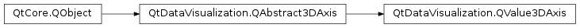

QtDataVisualization.QValue3DAxis¶
Synopsis¶
Functions¶
- def
formatter() - def
labelFormat() - def
reversed() - def
segmentCount() - def
setFormatter(formatter) - def
setLabelFormat(format) - def
setReversed(enable) - def
setSegmentCount(count) - def
setSubSegmentCount(count) - def
subSegmentCount()
Signals¶
- def
formatterChanged(formatter) - def
labelFormatChanged(format) - def
reversedChanged(enable) - def
segmentCountChanged(count) - def
subSegmentCountChanged(count)
Detailed Description¶
-
class
PySide2.QtDataVisualization.QtDataVisualization.QValue3DAxis([parent=nullptr])¶ Parameters: parent – PySide2.QtCore.QObject
-
PySide2.QtDataVisualization.QtDataVisualization.QValue3DAxis.formatter()¶ Return type: PySide2.QtDataVisualization.QtDataVisualization::QValue3DAxisFormatter
-
PySide2.QtDataVisualization.QtDataVisualization.QValue3DAxis.formatterChanged(formatter)¶ Parameters: formatter – PySide2.QtDataVisualization.QtDataVisualization::QValue3DAxisFormatter
-
PySide2.QtDataVisualization.QtDataVisualization.QValue3DAxis.labelFormat()¶ Return type: unicode
-
PySide2.QtDataVisualization.QtDataVisualization.QValue3DAxis.labelFormatChanged(format)¶ Parameters: format – unicode
-
PySide2.QtDataVisualization.QtDataVisualization.QValue3DAxis.reversed()¶ Return type: PySide2.QtCore.bool
-
PySide2.QtDataVisualization.QtDataVisualization.QValue3DAxis.reversedChanged(enable)¶ Parameters: enable – PySide2.QtCore.bool
-
PySide2.QtDataVisualization.QtDataVisualization.QValue3DAxis.segmentCount()¶ Return type: PySide2.QtCore.int
-
PySide2.QtDataVisualization.QtDataVisualization.QValue3DAxis.segmentCountChanged(count)¶ Parameters: count – PySide2.QtCore.int
-
PySide2.QtDataVisualization.QtDataVisualization.QValue3DAxis.setFormatter(formatter)¶ Parameters: formatter – PySide2.QtDataVisualization.QtDataVisualization::QValue3DAxisFormatter
-
PySide2.QtDataVisualization.QtDataVisualization.QValue3DAxis.setLabelFormat(format)¶ Parameters: format – unicode
-
PySide2.QtDataVisualization.QtDataVisualization.QValue3DAxis.setReversed(enable)¶ Parameters: enable – PySide2.QtCore.bool
-
PySide2.QtDataVisualization.QtDataVisualization.QValue3DAxis.setSegmentCount(count)¶ Parameters: count – PySide2.QtCore.int
-
PySide2.QtDataVisualization.QtDataVisualization.QValue3DAxis.setSubSegmentCount(count)¶ Parameters: count – PySide2.QtCore.int
-
PySide2.QtDataVisualization.QtDataVisualization.QValue3DAxis.subSegmentCount()¶ Return type: PySide2.QtCore.int
-
PySide2.QtDataVisualization.QtDataVisualization.QValue3DAxis.subSegmentCountChanged(count)¶ Parameters: count – PySide2.QtCore.int
© 2018 The Qt Company Ltd. Documentation contributions included herein are the copyrights of their respective owners. The documentation provided herein is licensed under the terms of the GNU Free Documentation License version 1.3 as published by the Free Software Foundation. Qt and respective logos are trademarks of The Qt Company Ltd. in Finland and/or other countries worldwide. All other trademarks are property of their respective owners.